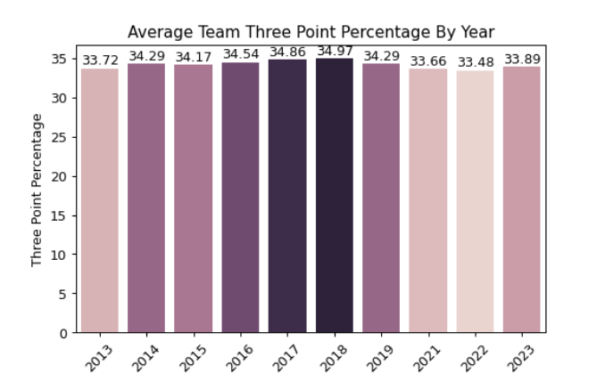
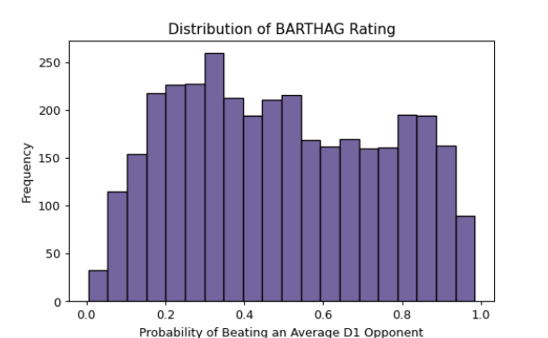
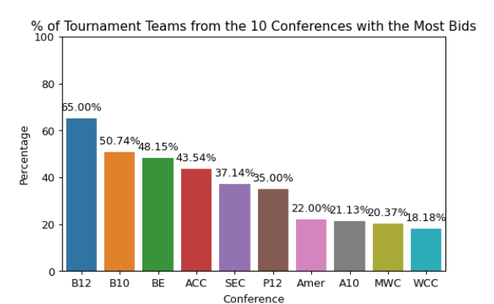
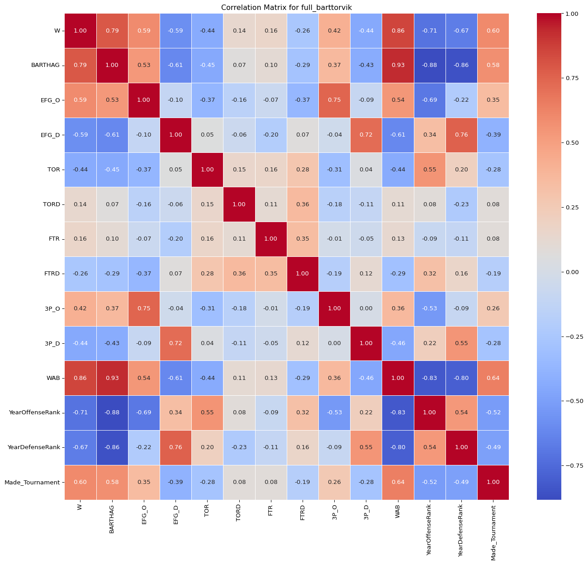
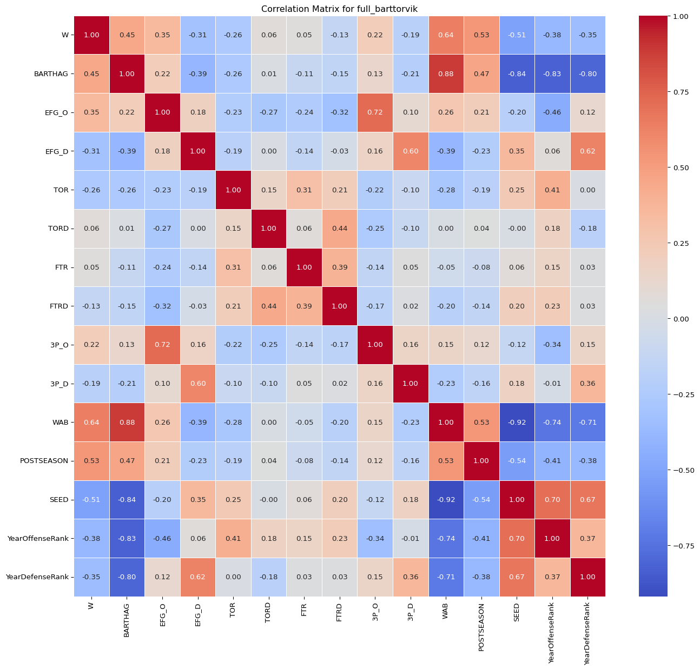
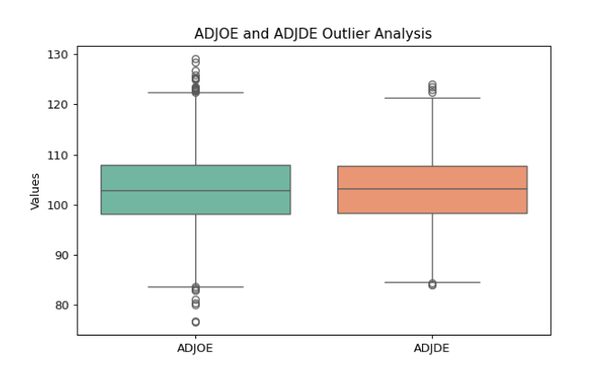

Code
import pandas as pd
import plotly.express as px
import matplotlib.pyplot as plt
import seaborn as sns
full_barttorvik = pd.read_csv("../data/cbb.csv")Now that our data is clean and well organized, we can begin to explore certain trends within it. My end goal for this project is to better understand the factors that aid teams in selection for the NCAA Men’s Basketball Tournament.
EDA is an important part of the data science life cycle. In order to begin to run any sort of modeling techniques, it’s necessary to have a deeper understanding of the actual data being presented. In this tab, I’ll dig deeper into the BartTorvik dataset which was introduced on the Data Gathering page. By looking at different aspects of the dataset (like sample statistics and variable correlation), it will make it easier to interpret the results found later in the project. All visualizations on this page should ideally be intuitive to any reader, regardless of whether or not they are familiar with college basketball.
import pandas as pd
import plotly.express as px
import matplotlib.pyplot as plt
import seaborn as sns
full_barttorvik = pd.read_csv("../data/cbb.csv")This EDA page will involve a lot of visualization, for which the plotly, matplotlib, and seaborn packages are incredibly helpful. I will also continue to use pandas to analyze and reshape my data.
Above, we imported the packages necessary to manipulate and visualize the data on this tab. First, I thought it would be a good idea to view summary statistics about particular indicators I was interested in. I decided to select the 5 columns listed below:
Adjusted Offensive Efficiency (ADJOE)- this is a metric that seeks to quantify how efficient a specific team is at scoring the basketball. The specific calculations that go into this metric can be found here. Essentially, it takes a team’s points per possession and adjusts them according to the quality of their opponent and venue. The average Division 1 team’s ADJOE usually comes out near 100, although this average differs by year.
Adjusted Defensive Efficiency (ADJDE)- this metric is the inverse of above, essentially quantifying how good a team is at preventing their opponents from scoring. Because it is a defensive metric, a lower ADJDE is preferable, as opposed to a high ADJOE being preferable. Once again, the average team usually hovers around an ADJDE of 100, although it also differs by year.
Three Point Percentage (3P_O)- this metric simply calculates a team’s three point percentage for the year. It tracks the number of three point shots made divided by total three point attempts.
Wins Above Bubble (WAB)- wins above bubble is a metric that seeks to quantify how good a team has performed from their schedule relative to a “bubble” team. In College Basketball, a bubble team typically refers to one of the Last Four In (last four teams to make the tournament) or First Four Out (first four teams left out of the tournament). There are 32 at large qualifier spots per year, meaning that the bubble usually encompasses the 29th-36th best at-large teams. This metric seeks to calculate, all things equal, how many more or fewer wins a team has attained compared to how the computer predicts an average bubble team would have performed with the same schedule. Because only 68 teams make the tournament each year (out of 350+), the mean WAB value will be significantly less than 0. Only the top ~50 or so teams for each given year will have a positive WAB.
Made Tournament- this column was added during the data gathering portion of this project. Each team that ended up making the tournament (whether through auto qualifying due to winning their Conference Tournament or being selected as one of the 32 best at-large teams) received a 1 in this column, while all teams who missed the tournament received a 0.
barthag = full_barttorvik["BARTHAG"]
columns = ["ADJOE", "ADJDE", "3P_O", "WAB", "Made_Tournament"]
full_barttorvik[columns].describe()| ADJOE | ADJDE | 3P_O | WAB | Made_Tournament | |
|---|---|---|---|---|---|
| count | 3523.000000 | 3523.000000 | 3523.000000 | 3523.000000 | 3523.000000 |
| mean | 103.151320 | 103.153250 | 34.185580 | -7.579620 | 0.181663 |
| std | 7.264859 | 6.511989 | 2.729186 | 6.815976 | 0.385622 |
| min | 76.600000 | 84.000000 | 24.900000 | -25.200000 | 0.000000 |
| 25% | 98.200000 | 98.400000 | 32.300000 | -12.600000 | 0.000000 |
| 50% | 102.800000 | 103.200000 | 34.100000 | -7.900000 | 0.000000 |
| 75% | 107.900000 | 107.800000 | 36.000000 | -3.000000 | 0.000000 |
| max | 129.100000 | 124.000000 | 44.100000 | 13.100000 | 1.000000 |
After analyzing the summary statistics, we can start to learn a few things about the dataset. First, we have data on 3523 distinct team seasons over the last decade. The average ADJOE and ADJDE were both a bit higher than 100, but are relatively equal (which is important for consistency’s sake). The average team shot 34.1% from three point range, while the best shooting team over the last ten years shot a staggering 44.1% from three. Our assumptions for WAB track, with the 75th percentile team still being 3 wins below the bubble.
Finally, 18.2% of our 3523 teams made the tournament (640). This is interesting and allowed me to make a new realization about the data. For the last decade, the tournament has had four games played before the official start of the tournament to reduce the field from 68 –> 64. Since this dataset only classifies 64 of teams per year as officially making the tournament, teams that lose their play-in game are considered as having missed the tournament for analysis purposes.
filt1 = full_barttorvik.loc[full_barttorvik['POSTSEASON'] == 7].copy()
filt1['Label'] = filt1['TEAM'] + ' ' + filt1['YEAR'].astype(str)
fig = px.scatter(
filt1,
x='ADJDE',
y='ADJOE',
text='Label',
title='ADJDE vs ADJOE for Last 10 Champions',
labels={'ADJDE': 'Adjusted Defensive Efficiency', 'ADJOE': 'Adjusted Offensive Efficiency'},
)
fig.update_traces(
textposition='top right',
mode='text+markers',
marker=dict(size=13),
textfont=dict(size=15)
)
fig.update_layout(
margin=dict(l=0, r=0, t=40, b=0),
height=500,
xaxis=dict(
tickmode='linear',
dtick=5,
title=dict(text='Adjusted Defensive Efficiency', font=dict(size=14))
),
yaxis=dict(
title=dict(text='Adjusted Offensive Efficiency', font=dict(size=14))
),
title=dict(text='ADJDE vs ADJOE for Last 10 Champions', font=dict(size=24))
)
fig.show().png)
In this plot, I decided to compare the offensive and defensive efficiencies of the ten NCAA Champion teams from the dataset. As mentioned before, a high ADJOE and a low ADJDE is the ideal combination. As such, we should expect a team that dominates both aspects to be in the top left quadrant. However, the top left quadrant is pretty bare.
Instead, we can see that Louisville’s 2013 team had by far the best defensive metrics of any team on this list. In contrast, Villanova’s 2018 team and Baylor’s 2021 team were more offensive minded, having the two lowest defensive efficiencies and some of the highest offensive efficiencies.
While this is a fun plot, we can’t deduce a ton of meaningful information. The playstyle of basketball has changed significantly over the last decade, meaning that it’s not possible to perfectly compare these metrics year over year. To combat this, I created YearOffensiveRank and YearDefensiveRank columns. These simply compute how a team ranked relative to others their same year (1 being the best). Since my project analysis revolves around which teams make the tournament each year and is not concerned with which teams were the best across years, strictly comparing a team’s ADJOE and ADJDE to their yearly peers is sufficient.
average_3p_o_by_year = full_barttorvik.groupby('YEAR')['3P_O'].mean().reset_index()
average_3p_o_by_year['3P_O'] = pd.to_numeric(average_3p_o_by_year['3P_O'], errors='coerce')
plt.figure(figsize=(10, 6))
sns.barplot(x='YEAR', y='3P_O', data=average_3p_o_by_year, hue = '3P_O', legend= False)
plt.title('Average Team Three Point Percentage By Year')
plt.xlabel('Year')
plt.ylabel('Three Point Percentage')
plt.xticks(rotation=45)
for index, value in enumerate(average_3p_o_by_year['3P_O']):
plt.text(index, value + 0.1, f'{value:.2f}', ha='center', va='bottom')
plt.show()
Next, I wanted to examine how much the average team’s three point percentage has changed by year. Initially, I expected there to be a lot more variation. Basketball has become much more three point reliant over the last decade. However, that doesn’t seem to be reflected in our data. The average team’s three point percentage hovered between 33 and 35% each year. While teams have become more reliant on the three, they aren’t necessarily shooting it at a higher clip. This chart also presents an opportunity to talk about 2020’s omission from the dataset. Due to COVID, the 2020 NCAA Basketball Tournament was cancelled, meaning that we will not be using that year’s data as there was no selection show or tournament.
custom_colors = sns.color_palette("viridis")
plt.figure()
sns.histplot(full_barttorvik['BARTHAG'], bins=20, color=custom_colors[0], edgecolor='black', kde=False)
plt.title('Distribution of BARTHAG Rating')
plt.xlabel('Probability of Beating an Average D1 Opponent')
plt.ylabel('Frequency')
plt.show()
Next, I wanted to take a look at the distribution of our dataset’s BARTHAG column. BARTHAG is the in-house power ranking computed by BartTorvik. Unfortunately (but understandably), their model is not public knowledge. However, we know it relies heavily on ADJOE and ADJDE. This indicator seeks to quantify how likely a team is to beat an average Division 1 opponent (essentially a team ranked ~180th each year) on a neutral court. As we can see from this distribution, it isn’t particularly normal. There seems to be a lot of rather poor performing teams that have a BARTHAG around ~0.3. The other values seem to be semi-uniformly distributed form 0.15-0.9.
top_conferences = full_barttorvik[full_barttorvik['Made_Tournament'] == 1]['CONF'].value_counts().nlargest(10).index
df_top_10_conferences = full_barttorvik[full_barttorvik['CONF'].isin(top_conferences)]
percentage_data = df_top_10_conferences.groupby('CONF')['Made_Tournament'].mean() * 100
percentage_data = percentage_data.sort_values(ascending=False)
custom_colors = sns.color_palette("flare", len(percentage_data))
plt.figure(figsize=(12, 5))
ax = sns.barplot(x=percentage_data.index, y=percentage_data.values, hue=custom_colors, legend=False)
for p in ax.patches:
percentage_value = p.get_height()
ax.annotate(f'{percentage_value:.2f}%', (p.get_x() + p.get_width() / 2., p.get_height()),
ha='center', va='center', xytext=(0, 10), textcoords='offset points', fontsize=10)
plt.title('% of Tournament Teams from the 10 Conferences with the Most Bids')
plt.xlabel('Conference')
plt.ylabel('Percentage')
plt.ylim(0, 100)
plt.show()
The NCAA does not distribute bids equally across its 32 conferences. Of the 32 conferences, there are 6 classified as “Major Conferences” (Big 12, Big Ten, Big East, ACC, SEC, and Pac 12). These major conferences get a disproportionate amount of the at-large bids given out each year. This is due to a multitude of reasons, including that these conferences have, on average, a higher skill level due to much more funding. I wanted to explore how common it has been to make the tournament from each conference over the last decade. I only plotted the ten conferences with the most bids, partly due to ease of visualization but also due to the fact that nearly every conference outside of this top ten only receives their one automatic qualifier bid per year.
From this, we can see that the Big 12 gets the highest proportion of their teams into the tournament. Over the last decade, 65% of individual seasons in the conference have resulted in a tournament appearance. Beyond the six major conferences, there are a few “High-Mid Majors” that typically receive a few bids per year. The American, Atlantic 10, Mountain West, and West Coast Conference usually send ~1/5 of their teams to dance each season.
Its also worth noting that each conference has a differing number of teams. The Big 12, despite the name, has spent most of the last decade with just 10 members. The ACC is on the larger end, with 15 members. With impending realignment over the next few years, the number of schools in each of these major conferences will drastically change. This chart will certainly look much different a decade from now.
Next, I wanted to see how each of the columns in our dataset correlated with one another. Specifically, I wanted to see which metrics had the highest correlation with both making the tournament (Made_Tournament) and winning tournament games (POSTSEASON). To do so, I had to drop a lot of the columns that I didn’t feel made as much sense or were as interesting in terms of potential correlation. Our initial dataset contained 25 columns, so a correlation matrix that large would be hard to interpret.
numbered_bart = full_barttorvik.copy()
to_drop = ['TEAM', 'ADJOE', 'ADJDE', '2P_O', '2P_D', 'YEAR', 'TotalRank', 'TotalOffenseRank', 'TotalDefenseRank', 'G', 'SEED', 'YearRank', 'POSTSEASON', 'ADJ_T', 'ORB', 'DRB', 'CONF']
numbered_bart.drop(columns= to_drop, inplace= True)
correlation_matrix = numbered_bart.corr()
plt.figure(figsize=(16, 14))
sns.heatmap(correlation_matrix, annot=True, cmap='coolwarm', fmt=".2f", linewidths=.5, xticklabels=True, yticklabels=True, cbar_kws={'orientation': 'vertical'})
plt.subplots_adjust(left=0.1, right=0.9, top=0.9, bottom=0.1)
plt.title('Correlation Matrix for full_barttorvik')
plt.savefig('correlation_matrix.png', bbox_inches='tight')
plt.show()
From this matrix, we can immediately see a few strong relationships from our data. The BARTHAG metric seems to be heavily correlated with WAB, YearOffenseRank, and YearDefenseRank. None of this is surprising. One of the most surprising insights to me was the low correlation between making the tournament and defensive turnover rate. Teams better at forcing turnovers actually seem to have no change in their chance to make the tournament. Instead, the stronger correlation comes from offensive turnover rate (teams who take care of the ball and commit less turnovers are more likely to make the tournament).
Next, I wanted to add the Postseason success column into the correlation matrix. This column, as created in the data gathering section, gives a value 0 through 7 to each team. A team with a value of 0 missed the tournament, while a team with a value of 7 won the entire thing. I decided to filter out all teams who missed the tournament for this matrix, hopefully to give a better glimpse into which factors remain important even after earning a spot in the tournament.
numbered_bart2 = full_barttorvik.copy()
to_drop = ['TEAM', 'ADJOE', 'ADJDE', '2P_O', '2P_D', 'YEAR', 'TotalRank', 'TotalOffenseRank', 'TotalDefenseRank', 'G', 'YearRank', 'Made_Tournament',
'ADJ_T', 'ORB', 'DRB', 'CONF']
numbered_bart2.drop(columns= to_drop, inplace= True)
numbered_bart2 = numbered_bart2[numbered_bart2['POSTSEASON'] != 0]
correlation_matrix = numbered_bart2.corr()
plt.figure(figsize=(16, 14))
sns.heatmap(correlation_matrix, annot=True, cmap='coolwarm', fmt=".2f", linewidths=.5, xticklabels=True, yticklabels=True, cbar_kws={'orientation': 'vertical'})
plt.subplots_adjust(left=0.1, right=0.9, top=0.9, bottom=0.1)
plt.title('Correlation Matrix for full_barttorvik')
plt.savefig('correlation_matrix2.png', bbox_inches='tight')
plt.show()
Since this second correlation matrix filters out teams that didn’t make the tournament, it’s interesting to see what factors might be the differentiators for good teams. Unfortunately, for the sake of my personal curiosity, not much seems to change. Most of the correlations simply become slightly weaker, which makes sense considering that there is likely less variance in most of these values for teams good enough to make the tournament.
After all of this exploration, I am given a few potential leads for how to further investigate my initial hypothesis. From the beginning, I wanted to look into the factors that determine which teams do and don’t make the NCAA Tournament. After looking at visualizations and correlations, it seems as though BartTorvik provides some comprehensive predictive metrics, which do a good job of answering my initial question. A team’s offensive and defensive efficiencies lead to success. The BARTTHAG ranking does a good job of aggregating these efficiencies to create a predictive power ranking metric. However, I think digging deeper into specific other factors that influence these results would be really interesting. The dataset used provides over two dozen columns of statistical measures, many of which are components of a team’s efficiency metrics. Figuring out which of these building blocks carries the most influence will be something I’m excited to explore moving forward.
Obviously, in a dataset of 3500+ samples, there are bound to be edge cases and outliers that don’t perfectly align with the rest of the data. Especially when considering that NCAA Tournament Selection is conducted by a committee, there is plenty of space for controversy and human error. Each year, there always seems to be a handful of surprise teams that end up getting at-large spots, as well as a few teams that seemingly had good enough metrics to have earned a spot in the tournament. While it’s undoubtedly heartbreaking for teams left on the outside looking in, it does make this project more engaging. There is no one objective ranking that determines which teams get in to the tournament. Instead, I hope to find a way to dig deeper into the human aspect of the selection process. Because of this, I actually think it is beneficial to leave all teams in my dataset and not remove outliers.
While there might be a team that had a high enough number of Wins Above Bubble or a powerful enough offense to make the tournament in most instances, ultimately, there was a reason for each team not to have been selected. For this reason, I am not inclined to remove any teams from this dataset.
plot_columns = ["ADJOE", "ADJDE"]
plt.figure(figsize=(10, 6))
sns.boxplot(data=full_barttorvik[plot_columns], palette='Set2')
plt.title('ADJOE and ADJDE Outlier Analysis')
plt.ylabel('Values')
plt.show()
I decided to plot each team’s ADJOE and ADJDE to get a feel for any extreme outliers. Of course, had data been misinput, the outlier would be removed. However, we can see that each value in the dataset seems reasonable. Interestingly enough, there seem to be more teams that have been >3 standard deviations from the mean for ADJOE than ADJDE. This may be something that gets looked into more down the road in this project.
Through Exploratory Data Analysis, I was able to get a better grasp on the dataset that I’ll continue to use throughout this project. Summary statistics, visuals, and correlation analyses were important in helping me decide where to take this project next.